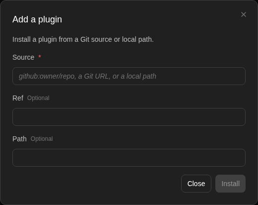

How to get to it
- Sidebar Customize (
sidebar-skills-link, lands on/mcp), then Plugins in the Customize navigation (sidebar-extensions-/plugins). - Direct URL
/plugins. - Command menu (
Control+k/Meta+k): "Plugins" finds only Customize ("Browse skills, plugins, and integrations"), which lands on/mcp; then click Plugins. There is no direct Plugins command. - Phone width:
/customizeshows the Customize hub; its Plugins row (extensions-mobile-hub >> sidebar-extensions-/plugins) opens/plugins, and the top bar's Back chevron (sidebar-mobile-back-button) returns to/customize. /launch: from a plugin's detail modal (Start Conversation), or a deep link/launch?plugins=<base64 JSON array>&message=<text>(production format) or/launch?plugin_source=…(dev format).- Attaching plugins from the home composer (Plugins pill) is F03 (
F03.plugin-picker); the conversation's Show Plugins list is F27 (F27.plugins-modal).
Before you start
Start with the common launch and health checks, then follow this family’s preconditions in order. Recipes share the fixtures and state named below.
Preconditions:
- Baseline state (launched, doctored,
onboard --skipdone), local backend, desktop viewport. - An active LLM profile (
control-openhands llm preset deepseek) for Enabled plugins auto-load and the two Start-a-conversation bullets. - No plugin installed:
control-openhands api GET /api/plugins/installedreturns{"plugins": []}. - The catalog comes from the launcher's cached public-skills checkout and needs no network:
control-openhands api GET /api/plugins/marketplacelistscity-weather,magic-testand others with local-pathsourcevalues.magic-testanswers "alakazam" withThe magic worked! Plugin loaded successfully. 🎩✨, which makes plugin loading cheap to prove. - Right before the Local plugin bullet (not earlier: it changes card counts and the Local filter), put a local plugin in the Agent Server's
~/.agents/plugins. No CLI verb does this (harness gap); from the checkout runH="$OH_VERIFY_RUN/private/home/.agents/plugins"; mkdir -p "$H" && cp -r "$OH_VERIFY_RUN/private/cache/skills/public-skills/plugins/magic-test" "$H/qa-local-plugin" && sed -i 's/"name": "magic-test"/"name": "qa-local-plugin"/' "$H/qa-local-plugin/.plugin/plugin.json". The rename matters: a local plugin whose name is already in the catalog is hidden. - The Add plugin bullet installs from
github:OpenHands/extensions, which needs outbound access to GitHub.
Behavior inventory
25 stable behavior IDs and their expected behavior
F19.page/pluginsshows the Plugins heading, the description "Browse, install, enable, and uninstall plugins. Enabled plugins load automatically into new conversations.", an enabled Add plugin button on a local backend, and the catalog as cards. Read recipe ↓F19.searchthe search box filters by name, description, source, path and ref; a query matching nothing showsNo plugins match your search.; the X clears the query. Read recipe ↓F19.status-filterthe All / Installed / Available / Local segments filter the grid; the active one hasaria-pressed="true"; the filter resets to All on reload. Read recipe ↓F19.detail-modalclicking a card (or Enter/Space on a focused card) opens a modal with name, source, description, Skills in this plugin bundle, Files and footer actions; X, Close and Escape close it. Read recipe ↓F19.files-browserin the modal's Files tree, expanding a folder and selecting a file shows its highlighted content with line numbers; selecting it again closes the viewer. Read recipe ↓F19.install-cardInstall on a card installs the plugin: toastPlugin installed., the button becomes an enable switch, a version pill appears, the card sorts first and the install survives a reload. Read recipe ↓F19.install-modalInstall in the detail modal does the same for the open plugin; the modal stays open and switches to the installed footer. Read recipe ↓F19.enable-togglethe card switch (namedDisable plugin/Enable plugin) and the modal Enabled/Disabled switch turn an installed plugin off and on; the state persists after reload. Read recipe ↓F19.enabled-autoloadan installed, enabled plugin loads into every new conversation; disabled, it does not. Read recipe ↓F19.refreshUpdate in an installed plugin's modal re-fetches it from its recorded source and showsPlugin updated.Read recipe ↓F19.uninstallUninstall removes the plugin at once (no confirmation), showsPlugin uninstalled., closes the modal and returns the card to Install. Read recipe ↓F19.add-pluginAdd plugin opens Add a plugin with Source (required), Ref and Path (optional); Install stays disabled until Source has text; a valid source installs and closes the modal. Read recipe ↓F19.add-plugin-cancelthe Add modal's X, Close, Escape and a backdrop click close it without installing; reopening starts with empty fields. Read recipe ↓F19.add-plugin-erroran unusable source shows one error toast with the server's reason and keeps the modal open with the typed values. Read recipe ↓F19.installed-coordinatesa plugin installed with a source, ref and path shows that source on its card and in the modal header, and modal pillsv<version>,Ref <resolved commit>andPath <repo path>next to the Enabled switch. Read recipe ↓F19.local-plugina plugin found in~/.agents/pluginsshows a Local badge (no Install or switch), is listed under the Local filter, and its modal has a Local pill, Files, no Install/Uninstall and no Start Conversation. Read recipe ↓F19.start-conversationStart Conversation in the detail modal opens/launch?plugins=<base64 JSON>for that plugin. Read recipe ↓F19.launch-review/launchshows a modal titledLaunch <plugin>(one plugin) orLaunch Plugin(several), the optionalmessagewith HTML stripped and capped at 500 characters, and each plugin as<source> / <path> @ <ref>; X and Escape go to/conversations. Read recipe ↓F19.launch-parametersplugins withparametersget an expanded, collapsible section with a text input, number input (blank becomes 0) or checkbox per value; edits are kept. Read recipe ↓F19.launch-trustStart Conversation stays disabled until the trust checkbox (I trust this plugin from <sources> …) is ticked; then it creates the conversation (sending the message, if any), opens/conversations/<id>, and the plugin is loaded there. Read recipe ↓F19.launch-dev-params/launch?plugin_source=…&plugin_ref=…&plugin_repo_path=…&message=…opens the same review for one plugin. Read recipe ↓F19.launch-errorsbare/launchor an empty array saysNo plugins were specified…; bad base64, invalid JSON, a non-array or an item withoutsourcesaysThe plugin configuration is invalid…; Go Home opens/conversations. Read recipe ↓F19.launch-creation-failedwhen conversation creation fails, the screen showsUnable to Launch/Failed to Start Conversationwith Go Home and Try Again; Try Again reloads the page, which brings back the review modal with the trust box cleared. Read recipe ↓F19.launch-unicodea deep link whose JSON contains non-ASCII text (UTF-8 base64) shows that text correctly. Read recipe ↓F19.phoneat 390 px the toolbar stacks, cards fit, and the detail, Add and launch modals stay inside the viewport. Read recipe ↓
Readable recipes
Read each script from top to bottom. Code is copied from the map; prose gives the action, expected observation, and conditions. <id>, <run> and similar placeholders stand for values from your own run. Short forms such as browser count continue the same control-openhands invocation; they are kept as documented.
Expected observations describe the recipe’s contract. Captures below selected recipes show representative real states from this snapshot; they do not mark every mapped behavior as passed. Follow cleanup before moving to another family.
No recipes match. Try another word or a behavior ID.
Open the page #
- Do
control-openhands browser goto /conversations - Check
control-openhands browser click 'testid=sidebar-skills-link' --expect-url '/mcp(\?|$)' - Check
control-openhands browser click 'testid=sidebar-extensions-/plugins' --expect-url '/plugins(\?|$)' - Check
control-openhands browser text 'testid=skills-plugins-screen >> h2'(
Plugins), - Check
control-openhands browser text 'testid=plugins-settings-description'(the description above),
- Check
control-openhands browser enabled 'testid=plugins-add-plugin-button'(
true) and - Check
control-openhands browser count '[data-testid^="plugin-card-"]'(9 with today's catalog).
- Do
control-openhands browser screenshot --feature F19.page --name catalogshows two columns of cards, each with name, truncated source path, a two-line description and Install.
Command-menu entry #
- NoteFrom
/conversationsrun - Do
control-openhands browser press Control+k - Do
control-openhands browser type 'testid=command-menu >> role=combobox' Plugins - Check
control-openhands browser snapshot 'testid=command-menu'(one option,
Customize Browse skills, plugins, and integrations. Go), - Do
control-openhands browser press Enter - Wait
control-openhands browser wait-url '/mcp(\?|$)' - Check
control-openhands browser click 'testid=sidebar-extensions-/plugins' --expect-url '/plugins(\?|$)'
Search #
- Do
control-openhands browser fill 'testid=plugins-search-input' weather - Check
control-openhands browser count '[data-testid^="plugin-card-"]'(
1). - Do
control-openhands browser fill 'testid=plugins-search-input' alakazam - Notealso leaves
1(magic-test, matched on its description). - Do
control-openhands browser fill 'testid=plugins-search-input' zzz-none - Check
control-openhands browser text 'testid=plugins-no-match' - Note:
No plugins match your search.Run - Do
control-openhands browser click 'testid=plugins-toolbar >> role=button[name="Clear search"]' - Check
control-openhands browser value 'testid=plugins-search-input'is empty and the count is back to 9.
Status filter #
- Check
control-openhands browser attr 'testid=plugins-filter-all' aria-pressedis
true. - Do
control-openhands browser click 'testid=plugins-filter-installed' - Note: its
aria-pressedistrue, All's isfalse, and with nothing installed - Check
control-openhands browser count 'testid=plugins-no-match'is
1. - Do
control-openhands browser click 'testid=plugins-filter-available'shows all 9 cards;
- Do
control-openhands browser click 'testid=plugins-filter-local'shows
plugins-no-match(no local plugin yet). - NoteAfter
- Do
control-openhands browser reload - Note
plugins-filter-allis pressed again.
Detail modal #
- Do
control-openhands browser click 'testid=plugin-card-magic-test' - Check
control-openhands browser snapshot 'testid=plugin-detail-modal' - Note: heading
magic-test, the source path, the description,Skills in this plugin bundlewithmagic-word,Fileswith.pluginandskillsfolders, and buttons Install, Start Conversation, Close. - NoteClose with
- Do
control-openhands browser click 'testid=plugin-detail-modal-close'(
browser count 'testid=plugin-detail-modal'is0). - NoteKeyboard:
- Do
control-openhands browser focus 'testid=plugin-card-city-weather' - Do
control-openhands browser press Enter - Check
control-openhands browser attr 'testid=plugin-detail-modal' data-plugin-name(
city-weather); - Do
control-openhands browser press Escape - Notecloses it;
browser focusagain and - Do
control-openhands browser press Space - Notereopens it;
- Do
control-openhands browser click 'testid=plugin-detail-modal-dismiss' - Notecloses it.
Files #
- NoteOpen the
magic-testmodal again and run - Do
control-openhands browser click 'testid=file-tree-dir-.plugin' - Do
control-openhands browser click 'testid=file-tree-file-.plugin/plugin.json' - Wait
control-openhands browser wait 'testid=plugin-file-content >> text=magic-test' --timeout 15000 - Check
control-openhands browser text 'testid=plugin-file-content' - Note:
.plugin/plugin.jsonfollowed by numbered JSON lines (2 "name": "magic-test",). - Do
control-openhands browser screenshot --feature F19.files-browser --name plugin-jsonshows the tree with the file highlighted above a syntax-coloured viewer.
- NoteClick the same file again;
- Check
control-openhands browser count 'testid=plugin-file-content'is
0. - NoteClose with
testid=plugin-detail-modal-close.
Install from a card #
- Check
control-openhands browser toasts --clear - Do
control-openhands browser click 'testid=plugin-install-magic-test' - Wait
control-openhands browser wait 'testid=plugin-toggle-magic-test' --timeout 60000 - Check
control-openhands browser toasts(
Plugin installed.). - Check
control-openhands browser text 'testid=plugin-version-magic-test'is
v1.0.0and - Do
control-openhands browser eval "[...document.querySelectorAll('[data-testid^=plugin-card-]')].map(e=>e.dataset.testid)[0]"is
plugin-card-magic-test. - NoteAfter
- Do
control-openhands browser reload - Do
control-openhands browser click 'testid=plugins-filter-installed' - Note
browser count '[data-testid^="plugin-card-"]'is1, and - Check
control-openhands api GET /api/plugins/installedlists
magic-testwith"enabled": true. - NoteClick
testid=plugins-filter-all.
Enable switch #
- Check
control-openhands browser attr 'testid=plugin-toggle-magic-test' aria-checked(
true) and - Check
control-openhands browser attr 'testid=plugin-toggle-magic-test' aria-label(
Disable plugin), - Do
control-openhands browser hover 'testid=plugin-toggle-magic-test' - Do
control-openhands browser click 'testid=plugin-toggle-magic-test' - Notewait three seconds, then
browser attr ... aria-checkedagain (false, witharia-labelEnable plugin); after - Do
control-openhands browser reload - Noteit is still
falseandapi GET /api/plugins/installedshows"enabled": false. - NoteToday the disable is often lost: the reload's concurrent reads hit the metadata race (Gotchas) and the API, then the switch, read
"enabled": trueagain (2 of 3 trials; the PATCH itself returns 200). - NoteIf that happens, disable it once more before the modal step, which needs the plugin disabled.
- NoteIn the modal:
- Do
control-openhands browser click 'testid=plugin-card-magic-test' - Do
control-openhands browser click 'testid=plugin-detail-modal >> text="Disabled"' - Do
control-openhands browser eval "document.querySelector('[data-testid=plugin-modal-toggle-magic-test]').checked"(
true); the API shows"enabled": trueand, after closing the modal, the card switch'saria-checkedistrue.
Enabled plugins auto-load #
- NoteWith
magic-testenabled, run - Wait
control-openhands conversation start --prompt "alakazam" --wait --timeout 240 - Check
control-openhands browser text 'testid=agent-message >> nth=-1' - Note:
The magic worked! Plugin loaded successfully. 🎩✨. - Do
control-openhands browser goto /plugins - Notedisable it with the card switch (hover, click; API
"enabled": false) and run the sameconversation start: the reply is an ordinary request for a task, without the phrase.browser goto /pluginsagain;magic-teststays installed and disabled. - NoteToday the revisit often re-enables it (API
"enabled": true,installed_atreset; see Gotchas), so re-check the API before relying on the disabled state.
Update #
- Do
control-openhands browser click 'testid=plugin-card-magic-test' - Check
control-openhands browser toasts --clear - Do
control-openhands browser click 'testid=plugin-detail-refresh-magic-test' - Notewait a few seconds, then
- Check
control-openhands browser toasts - NoteExpected
Plugin updated.(the toast fades fast: readcontrol-openhands browser toasts --history). - NoteWhether it works depends on the recorded source (
control-openhands browser text 'testid=plugin-source-magic-test'): with the catalog path it does. - NoteKnown failure (reproduced 2026-10-06): a page revisit after a catalog install usually rewrites the source to
local(OpenHands/software-agent-sdk#5496, see Gotchas), and Update then answers 500 with one toast carrying the server's reason,Unable to parse extension source: local. Expected formats: 'github:owner/repo', git URL, or local path(browser screenshot --feature F19.refresh --name local-source-error). - NoteOn a plugin whose source survived (the GitHub install in Add plugin from GitHub,
browser text 'testid=plugin-source-magic-test'=github:OpenHands/extensions), the same click logsUpdating extension magic-test from github:OpenHands/extensionsandtoasts --historyshowsPlugin updated.Close the modal.
Start a conversation from an installed plugin #
- Do
control-openhands browser click 'testid=plugin-card-magic-test' - Check
control-openhands browser click 'testid=plugin-detail-start-conversation-magic-test' --expect-url '/launch\?plugins=' - Do
control-openhands browser eval "JSON.parse(atob(new URLSearchParams(location.search).get('plugins')))" - NoteExpected: the plugin's real source.
- NoteToday it is
[{"source":"local","ref":null,"repo_path":null}]and the modal title isLaunch local; after - Do
control-openhands browser check 'testid=trust-checkbox' - Check
control-openhands browser click 'testid=start-conversation-button' --expect-url '/conversations/[0-9a-f-]+' - Do
control-openhands browser type 'testid=chat-input' 'alakazam' - Do
control-openhands browser press Enter --selector 'testid=chat-input' - Noteleave the message at
Sending...(still after 25 s) with the bannerUnable to parse plugin source: local. Expected formats: 'github:owner/repo', git URL, or local path(control-openhands browser screenshot --feature F19.start-conversation --name local-source-conversation). - NoteWhen the installed plugin kept its source (the GitHub install below), the link carries it:
[{"source":"github:OpenHands/extensions","ref":"<resolved commit>","repo_path":"plugins/magic-test"}]and the title isLaunch magic-test.
Uninstall #
- Do
control-openhands browser goto /plugins - Check
control-openhands browser toasts --clear - Do
control-openhands browser click 'testid=plugin-card-magic-test' - Do
control-openhands browser click 'testid=plugin-detail-uninstall-magic-test' - Check
control-openhands browser count 'testid=plugin-detail-modal'(
0), - Check
control-openhands browser count 'testid=confirmation-modal'(
0: no confirmation), - Check
control-openhands browser toasts(
Plugin uninstalled.) and - Check
control-openhands browser count 'testid=plugin-install-magic-test'(
1). - NoteAfter
- Do
control-openhands browser reload - Notethe Install button is still there,
browser text 'testid=plugin-source-magic-test'is the catalog path again andapi GET /api/plugins/installedreturns{"plugins": []}.
Install from the modal #
- Check
control-openhands browser toasts --clear - Do
control-openhands browser click 'testid=plugin-card-city-weather' - Do
control-openhands browser click 'testid=plugin-detail-install-city-weather' - Wait
control-openhands browser wait 'testid=plugin-detail-uninstall-city-weather' --timeout 60000 - Check
control-openhands browser toasts(
Plugin installed.). - ExpectThe modal stays open (
browser count 'testid=plugin-detail-modal'is1), - Do
control-openhands browser eval "document.querySelector('[data-testid=plugin-modal-toggle-city-weather]').checked"is
true, and - Check
control-openhands browser snapshot 'testid=plugin-detail-modal >> footer'lists Update, Uninstall, Start Conversation, Close.
- NoteClean up with
- Do
control-openhands browser click 'testid=plugin-detail-uninstall-city-weather' - Note
browser count 'testid=plugin-install-city-weather'is1.
Cancel Add plugin #
- Do
control-openhands browser click 'testid=plugins-add-plugin-button' - Do
control-openhands browser fill 'testid=add-plugin-source-input' qa-typed - Do
control-openhands browser click 'testid=add-plugin-modal-close' - Check
control-openhands browser count 'testid=add-plugin-modal'is
0. - NoteReopen it:
- Check
control-openhands browser value 'testid=add-plugin-source-input'is empty.
- NoteType again and close with
- Do
control-openhands browser click 'testid=add-plugin-modal-dismiss'(count
0); reopen and - Do
control-openhands browser press Escape(count
0); reopen and - Do
control-openhands browser mouse-click 20 500 - Noteon the backdrop (count
0).api GET /api/plugins/installedstill returns{"plugins": []}andbrowser networkshows noPOST /api/plugins/install.
Add plugin form and error #
- Do
control-openhands browser click 'testid=plugins-add-plugin-button' - Check
control-openhands browser snapshot 'testid=add-plugin-modal' - Note: heading
Add a plugin,Install a plugin from a Git source or local path., textboxSource(placeholdergithub:owner/repo, a Git URL, or a local path),Ref Optional,Path Optional, Close and a disabled Install. - Do
control-openhands browser fill 'testid=add-plugin-source-input' ' ' - Notekeeps
- Check
control-openhands browser enabled 'testid=add-plugin-submit' - Noteat
false; - Do
control-openhands browser fill 'testid=add-plugin-source-input' qa-not-a-source - Noteturns it
true. - Check
control-openhands browser toasts --clear - Do
control-openhands browser click 'testid=add-plugin-submit' - Notewait a few seconds, then
- Check
control-openhands browser toasts --history - Check
control-openhands browser count 'testid=add-plugin-modal'(
1) and - Check
control-openhands browser value 'testid=add-plugin-source-input'(
qa-not-a-source). - ExpectThe history holds one toast with the server's reason: the Agent Server answers 400
Failed to fetch plugin source. Check that the source is valid., and the toast shows that text (browser screenshot --feature F19.add-plugin-error --name toast).

The Add a plugin form opens with source, ref and path inputs and disabled Install.
Form view only; no installation or error submission. Captured dialog alone to omit private catalog-cache paths.
How this screenshot was taken
agent server: 1.53.0 · automation: 1.19.0 (launcher default) · canvas: 1.26.0
control-openhands browser goto /plugins
control-openhands browser click testid=plugins-add-plugin-button
control-openhands browser screenshot testid=add-plugin-modal --feature F19.add-plugin --name add-pluginAdd plugin from GitHub #
- NoteIn the same modal run
- Do
control-openhands browser fill 'testid=add-plugin-source-input' 'github:OpenHands/extensions' - Do
control-openhands browser fill 'testid=add-plugin-repo-path-input' 'plugins/magic-test' - Check
control-openhands browser toasts --clear - Do
control-openhands browser click 'testid=add-plugin-submit' - Check
control-openhands browser text 'testid=add-plugin-submit'(
Installing…), then - Wait
control-openhands browser wait 'testid=add-plugin-modal' --state hidden --timeout 120000 - Check
control-openhands browser toasts(
Plugin installed.).api GET /api/plugins/installedlistsmagic-testwith four files (.claude-plugin/plugin.json,.codex-plugin/plugin.json,.plugin/plugin.json,skills/magic-word/SKILL.md) with"source": "github:OpenHands/extensions","repo_path": "plugins/magic-test"and a commit inresolved_ref; the card'splugin-source-magic-testreadsgithub:OpenHands/extensions. - ExpectThe metadata race (Gotchas) can still turn it into
"source": "local"withrepo_path: null. - NoteWithout GitHub access expect the error toast of the previous bullet instead.
- NoteClean up:
testid=plugin-card-magic-test→testid=plugin-detail-uninstall-magic-test.
Installed coordinates #
- NoteNeeds GitHub access like the previous bullet.
- Do
control-openhands browser click 'testid=plugins-add-plugin-button' - Do
control-openhands browser fill 'testid=add-plugin-source-input' 'github:OpenHands/extensions' - Do
control-openhands browser fill 'testid=add-plugin-ref-input' main - Do
control-openhands browser fill 'testid=add-plugin-repo-path-input' 'plugins/city-weather' - Do
control-openhands browser click 'testid=add-plugin-submit' - Wait
control-openhands browser wait 'testid=add-plugin-modal' --state hidden --timeout 120000(
toasts --history:Plugin installed.). - Check
control-openhands browser text 'testid=plugin-source-city-weather'is
github:OpenHands/extensions; - Do
control-openhands browser click 'testid=plugin-card-city-weather' - Check
control-openhands browser snapshot 'testid=plugin-detail-modal' - Noteshow the header paragraph
github:OpenHands/extensionsand the textv1.0.0 Ref <40-hex commit> Path plugins/city-weather Enabled(the API'sresolved_ref), and Files lists.claude-pluginand.codex-pluginthat the catalog copy lacks. - NoteClean up with
- Do
control-openhands browser click 'testid=plugin-detail-uninstall-city-weather' - Notethe card's source is the catalog path again.
Local plugin #
- ExpectAfter arranging
qa-local-plugin(Preconditions), run - Do
control-openhands browser reload - Check
control-openhands browser text 'testid=plugin-local-badge-qa-local-plugin'(
Local), and - Check
control-openhands browser count - Noteon
testid=plugin-install-qa-local-plugin,testid=plugin-toggle-qa-local-pluginandtestid=plugin-source-qa-local-plugin(all0). - Do
control-openhands browser click 'testid=plugins-filter-local' - Noteleaves one card; under
plugins-filter-availablebrowser count 'testid=plugin-card-qa-local-plugin'is0. - NoteBack on All,
- Do
control-openhands browser click 'testid=plugin-card-qa-local-plugin' - Check
control-openhands browser snapshot 'testid=plugin-detail-modal' - Note: no source line, pills
Local v1.0.0, the bundled skill and Files, and only a Close button in the footer (browser screenshot --feature F19.local-plugin --name modal). - NoteClose with Escape.
- NoteClean up:
rm -rf "$OH_VERIFY_RUN/private/home/.agents/plugins/qa-local-plugin", - Do
control-openhands browser reload - Notethe card count for
qa-local-pluginis0.
Start a conversation from the catalog #
- NoteWith
magic-testnot installed, run - Do
control-openhands browser click 'testid=plugin-card-magic-test' - Check
control-openhands browser click 'testid=plugin-detail-start-conversation-magic-test' --expect-url '/launch\?plugins=' - Noteand the
atobeval above: one object with the catalogsource,ref: null,repo_path: null. - Check
control-openhands browser snapshot 'testid=plugin-launch-modal'shows
Launch magic-test, the source path and the checkboxI trust this plugin from <source path> with the agent secrets defined in my account.; - Check
control-openhands browser enabled 'testid=start-conversation-button'is
false. - Do
control-openhands browser check 'testid=trust-checkbox'(
enabledturnstrue) and - Check
control-openhands browser click 'testid=start-conversation-button' --expect-url '/conversations/[0-9a-f-]+' - Check
control-openhands browser url - Notegives
<id>. - Do
control-openhands browser click 'testid=chat-plus-button' - Check
control-openhands browser click 'testid=show-plugins-button' - Check
control-openhands browser text 'testid=plugins-modal' - Notelist
magic-test; close withtestid=close-plugins-modal. - Do
control-openhands browser type 'testid=chat-input' 'alakazam' - Do
control-openhands browser press Enter --selector 'testid=chat-input' - Wait
control-openhands conversation wait <id> --timeout 180 - Check
control-openhands browser text 'testid=agent-message >> nth=-1' - Note: the magic phrase.
Review screen #
- Do
control-openhands browser goto '/launch?plugins=W3sic291cmNlIjoiZ2l0aHViOk9wZW5IYW5kcy9leHRlbnNpb25zIiwicmVwb19wYXRoIjoicGx1Z2lucy9jaXR5LXdlYXRoZXIifSx7InNvdXJjZSI6Imh0dHBzOi8vZ2l0aHViLmNvbS9PcGVuSGFuZHMvZXh0ZW5zaW9ucy5naXQiLCJyZXBvX3BhdGgiOiJwbHVnaW5zL21hZ2ljLXRlc3QiLCJyZWYiOiJtYWluIn1d'(two plugins from
OpenHands/extensions, one as an HTTPS git URL) and - Check
control-openhands browser snapshot 'testid=plugin-launch-modal' - Note: the heading
Launch Plugin(Launchonce); underPlugins, the textcity-weather OpenHands/extensions/ plugins/city-weather magic-test OpenHands/extensions/ plugins/magic-test@ main(the screenshot rendersOpenHands/extensions / plugins/magic-test @ main); and the checkboxI trust this plugin from OpenHands/extensions with the agent secrets defined in my account., which namesOpenHands/extensionsonce (browser screenshot --feature F19.launch-review --name multi). - NoteMessage:
- Do
control-openhands browser goto '/launch?plugin_source=github%3AOpenHands%2Fextensions&message=%3Cb%3EWeather%3C%2Fb%3E%20for%20QA' - Check
control-openhands browser text 'testid=plugin-launch-modal >> p' - Note:
Weather for QA(tags stripped). - NoteWith a 600-character
message(/launch?plugin_source=github%3AOpenHands%2Fextensions&message=aaa…), - Do
control-openhands browser eval "document.querySelector('[data-testid=plugin-launch-modal] p').textContent.length"is
500. - NoteClose:
- Do
control-openhands browser click 'testid=plugin-launch-modal >> testid=close-button' --expect-url '/conversations(\?|$)' - Noteon a fresh
/launch?..., - Do
control-openhands browser press Escape - Notealso lands on
/conversations.
Parameters #
- Do
control-openhands browser goto '/launch?plugins=W3sic291cmNlIjoiZ2l0aHViOk9wZW5IYW5kcy9leHRlbnNpb25zIiwicmVwb19wYXRoIjoicGx1Z2lucy9jaXR5LXdlYXRoZXIiLCJyZWYiOiJtYWluIiwicGFyYW1ldGVycyI6eyJjaXR5IjoiUGFyaXMiLCJkYXlzIjozLCJtZXRyaWMiOnRydWV9fV0%3D'(city-weather with
{"city":"Paris","days":3,"metric":true}) and - Check
control-openhands browser snapshot 'testid=plugin-launch-modal' - Note: a
city-weathersection button,ref: main,path: plugins/city-weather, textboxcity(Paris), spinbuttondays(3) and a checked checkboxmetric. - Do
control-openhands browser click 'testid=plugin-section-0' - Notecollapses it (
browser count 'testid=plugin-0-param-city'is0); click again to expand. - Do
control-openhands browser fill 'testid=plugin-0-param-city' Berlin - Do
control-openhands browser fill 'testid=plugin-0-param-days' ''(then
control-openhands browser value 'testid=plugin-0-param-days'is0) and - Do
control-openhands browser uncheck 'testid=plugin-0-param-metric'are accepted.
- ExpectA link that mixes plugins with and without parameters (
/launch?plugins=W3sic291cmNlIjoiZ2l0aHViOk9wZW5IYW5kcy9leHRlbnNpb25zIiwicmVwb19wYXRoIjoicGx1Z2lucy9tYWdpYy10ZXN0In0seyJzb3VyY2UiOiJnaXRodWI6T3BlbkhhbmRzL2V4dGVuc2lvbnMiLCJyZXBvX3BhdGgiOiJwbHVnaW5zL2NpdHktd2VhdGhlciIsInBhcmFtZXRlcnMiOnsiY2l0eSI6IlBhcmlzIn19XQ%3D%3D) lists the parameter-less one underAdditional Plugins. - NoteLeave with Escape; do not start this one (see Gotchas).
Dev format #
- Do
control-openhands browser goto '/launch?plugin_source=github%3AOpenHands%2Fextensions&plugin_ref=main&plugin_repo_path=plugins%2Fmagic-test&message=hi%20QA' - Check
control-openhands browser snapshot 'testid=plugin-launch-modal' - Note:
Launch magic-test, paragraphhi QA, textmagic-test OpenHands/extensions/ plugins/magic-test@ main.
Error states #
- NoteFor each of
/launch,/launch?plugins=garbage,/launch?plugins=e30%3D({}),/launch?plugins=W10%3D([]) and/launch?plugins=W3sicmVmIjoibWFpbiJ9XQ%3D%3D([{"ref":"main"}]) run - Check
control-openhands browser goto '<url>' - Check
control-openhands browser text 'testid=launch-error' - NoteBare and
[]readUnable to Launch/No plugins were specified. Please provide at least one plugin to launch.; the other three readThe plugin configuration is invalid. Please check the URL and try again.(browser screenshot --feature F19.launch-errors --name invalid-format). - Check
control-openhands browser count 'testid=try-again-button'is
0in all of them. - Check
control-openhands browser click 'testid=go-home-button' --expect-url '/conversations(\?|$)' - Noteleaves.
Creation failure #
- Do
control-openhands browser goto '/launch?plugin_source=github%3AOpenHands%2Fextensions&plugin_repo_path=plugins%2Fmagic-test' - Do
control-openhands browser check 'testid=trust-checkbox' - Do
control-openhands service stop agent-server - Do
control-openhands browser click 'testid=start-conversation-button' - Wait
control-openhands browser wait 'testid=launch-error' --timeout 60000 - Check
control-openhands browser text 'testid=launch-error' - Note:
Unable to Launch,Failed to Start Conversation,Go Home,Try Again(browser screenshot --feature F19.launch-creation-failed --name error). - Do
control-openhands browser click 'testid=try-again-button' - Notereloads the page; with the server still down the app shows Manage backends with the Local backend
Disconnected. - NoteRestore with
- Do
control-openhands restart --timeout 240 - Do
control-openhands browser reload - Note: the review modal is back and
- Do
control-openhands browser eval "document.querySelector('[data-testid=trust-checkbox]').checked"is
false. - Check
control-openhands doctor - Notebefore continuing.
Non-ASCII deep link #
- Do
control-openhands browser goto '/launch?plugins=W3sic291cmNlIjoiZ2l0aHViOnFhL3LDqXBvIn1d'(UTF-8 base64 of
[{"source":"github:qa/répo"}]) and - Check
control-openhands browser text 'testid=plugin-launch-modal >> h2' - NoteExpected
Launch qa/répo; todayLaunch qa/répo.
Phone #
- Do
control-openhands browser viewport phone - Do
control-openhands browser goto /plugins - Check
control-openhands browser bbox 'testid=skills-plugins-screen'(
insideViewporttrue,pageHorizontalOverflowfalse) and - Check
control-openhands browser eval "(()=>{const s=document.querySelector('[data-testid=plugins-search-input]').getBoundingClientRect(), f=document.querySelector('[data-testid=plugins-status-filter]').getBoundingClientRect();return {searchBottom:Math.round(s.bottom), filterTop:Math.round(f.top), filterWidth:Math.round(f.width)}})()" - Note:
filterTopis belowsearchBottom(stacked) andfilterWidthis348. - Do
control-openhands browser screenshot --feature F19.phone --name listshows one column of cards.
- NoteOpen
testid=plugin-card-city-weatherand - Check
control-openhands browser bbox 'testid=plugin-detail-modal'(
insideViewporttrue,browser screenshot --feature F19.phone --name detail), Escape; - Do
control-openhands browser click 'testid=plugins-add-plugin-button' - Check
control-openhands browser bbox 'testid=add-plugin-modal'(
insideViewporttrue), Escape. - ExpectThe parameters link from above gives
- Check
control-openhands browser bbox 'testid=plugin-launch-modal' - Note
insideViewporttrue(browser screenshot --feature F19.phone --name launch). - NoteHub entry:
- Do
control-openhands browser goto /customize - Do
control-openhands browser click 'testid=extensions-mobile-hub >> testid=sidebar-extensions-/plugins' --expect-url '/plugins(\?|$)' - Check
control-openhands browser click 'testid=sidebar-mobile-back-button' --expect-url '/customize(\?|$)' - NoteReturn with
- Do
control-openhands browser viewport desktop
Errors sweep #
- Check
control-openhands browser errors --app-onlyshows no page errors; the only app HTTP errors are the deliberate ones (refresh 500, install 400, 502s while the Agent Server was stopped).
Gotchas and known limits
- The card switch swaps its icon on hover. A plain
browser clickthat moves the pointer onto it from elsewhere (for example right after clicking a filter segment) is often swallowed (#17941): noPATCH /api/plugins/installed/<name>shows inbrowser network. Runbrowser hoveron the switch first, then click, and assertaria-checkedand the API, not the click result. - Installed plugins lose their source and their enabled state, intermittently (OpenHands/software-agent-sdk#5496). The Agent Server rewrites
<run>/private/plugins/installed/.installed.jsonwith a plain truncate-and-write on every load (SDKInstallationMetadata.save_to_dir), so a concurrentGET /api/plugins/installed(page loads fire several) can read an empty file: it logsFailed to load installed extension metadata … Invalid JSON: EOF while parsingandDiscovered untracked extension, then saves every plugin with"source": "local","enabled": trueand a freshinstalled_at. It hit catalog installs in most trials and a disabled plugin on 2 of 3 page revisits; GitHub installs kept their source in this run. Once it hits, the card showslocal, Update fails with a 500, Start Conversation builds an unusable/launchlink, and a disabled plugin silently auto-loads again. Prove the launch path from a card that is not installed, and re-read the API after every navigation. - A failed plugin install, update or uninstall shows one toast with the server's reason (enable uses the same handler; its failure is not driven here). A response with no reason in it, such as the ingress's 502 while the Agent Server is stopped, shows the generic
An error occurred; read the cause in the run'sprivate/stack.log. - Installing a plugin whose name is already installed should point the user to Update or Uninstall, as Apps do (
F20.install-duplicate). Known failure (reproduced 2026-10-06): with the catalogmagic-testinstalled, Add plugin withgithub:OpenHands/extensionsand Pathplugins/magic-testanswers 409 and toasts the server'sPlugin already installed. Use force=true to overwrite., which the form cannot do (browser screenshot --feature F19.add-plugin-error --name duplicate-409) (#18090). - Uninstall acts immediately, with no confirmation (MCP server delete and App uninstall confirm).
/launchwith amessagestarts the agent as soon as Start Conversation is clicked. Prefer links without a message and sendalakazamyourself; acity-weatherlaunch with a message makes the agent call an external weather API (stop it withtestid=stop-button).- Edited launch parameters cannot be observed after creation: the conversation's client metadata (
localStorage['openhands-agent-server-conversation-metadata']) strips them and the Agent Server does not return a conversation's plugins. Proving delivery needs request-body capture (harness gap). conversation startand launches leave the browser on a conversation page, which has its ownchat-input;browser goto /pluginsbefore the next card step.- Build deep links with URL-encoded base64 (
%2B,%2F,%3D): a raw+decodes to a space and gives the invalid-format error. Non-ASCII text must not be used in payloads (atobdecodes bytes as Latin-1). - The page loads three queries (marketplace, installed, local) behind skeleton rows; wait for
testid=plugins-toolbarbefore counting cards. With no plugins at all the page showsNo plugins found.(plugins-empty), which the bundled catalog makes unreachable; on a Cloud backend Add plugin and card actions are disabled (not driven: no Cloud account). - Local plugins under
~/.agents/pluginsappear on the next page load without a restart; the Agent Server'sHOMEis<run>/private/home.
Source paths: src/routes/skills-plugins.tsx, src/routes/launch.tsx, src/components/features/plugins/, src/components/features/launch/, src/utils/plugin-launch-url.ts, src/hooks/mutation/use-install-plugin.ts, src/hooks/mutation/use-set-plugin-enabled.ts, src/hooks/mutation/use-uninstall-plugin.ts, src/hooks/mutation/use-refresh-plugin.ts.